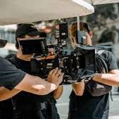
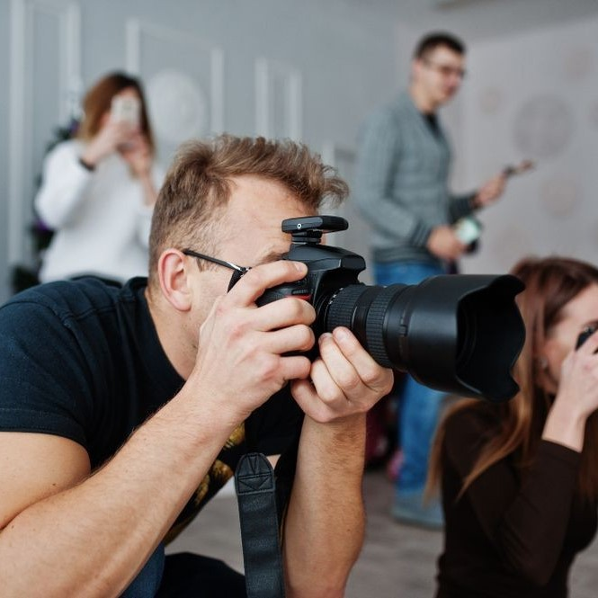

Tentang Medicom

Apa itu UKM Medicom?
UKM Medicom adalah sebuah Unit Kegiatan Mahasiswa
Multimedia Community yang ada di Politeknik Negeri
Cilacap. UKM ini hadir untuk mengembangkan bakat
para Mahasiswa/i Politeknik Negeri Cilacap yang suka
dalam hal Desain, Fotografi, dan Videografi.

Pendaftaran Pengurus
Pengurus UKM Medicom adalah anggota resmi UKM
Medicom yang dipilih oleh anggota resmi UKM Medicom
dalam rapat pemilihan.
Kepengurusan
Kepengurusan UKM Medicom terdiri atas, Ketua UKM,
Wakil Ketua UKM, Sekretaris, Bendahara, Jurnalistik,
Human Resources, Fotografi, Videografi, Desain,
Dasar 3D Modeling.
Tujuan Kegiatan
Kegiatan ini diselenggarakan untuk mengingatkan para
pengurus akan segala usaha yang telah dilakukan
selama satu periode ini.
Tentang Divisi di Medicom

Divisi Videografi
Divisi Videografi
bertanggung jawab untuk merekam atau membuat
produksi video. Selain itu, mendokumentasikan setiap
kegiatan internal maupun eksternal organisasi.

Divisi Fotografi
Divisi Fotografi
berperan dalam hal mengembangkan teknik-teknik
fotografi dengan cara melakukan foto hunting
bersama. Fotografi adalah proses melukis dengan
menggunakan media cahaya.